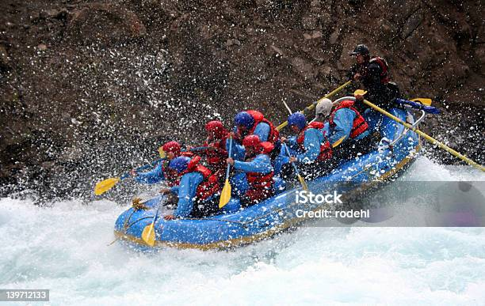
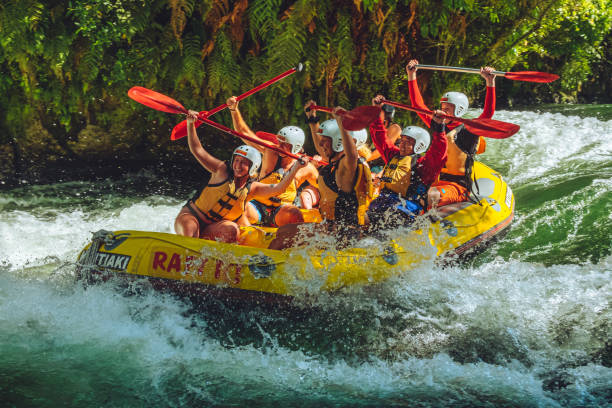

Nossa missão é conectar pessoas à natureza. Valorizamos a aventura com respnsabilidade. Venha e traga sua família ou amigos para viver experiências
Empresa X
History
A Empresa X nasceu em 1998, às margens do Rio das Corredeiras, no coração do Brasil Central. Tudo começou com dois amigos apaixonados por natureza: Carlos Menezes e Fernanda Dutra, que, após anos trabalhando em expedições esportivas pelo país, decidiram transformar a paixão pela água em um negócio.
Hoje, com mais de 25 anos de história, a Empresa X já levou mais de 80.000 aventureiros pelas corredeiras do Rio das Corredeiras. Seus pacotes variam de trilhas iniciantes para famílias a descidas de nível avançado para atletas experientes. Todos os guias possuem certificação em primeiros socorros e salvamento aquático.
Adventure Awaits You!



